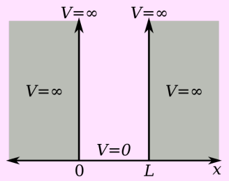
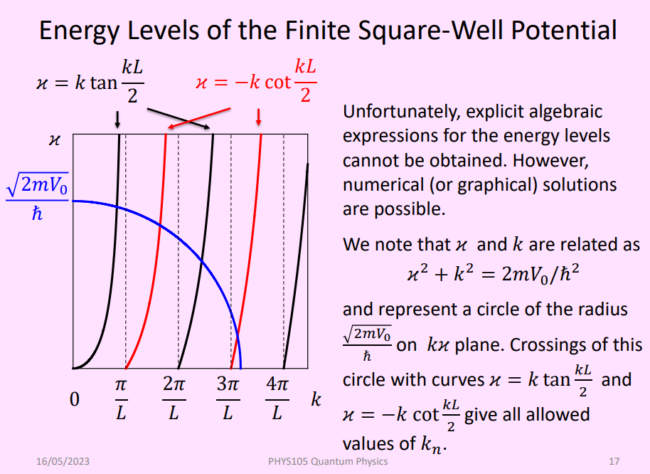

PHYS105-Quantum_Physics
- Photoelectric Effect
- Black Body Radiation
- X-Rays and Compton Scattering
- Line Spectra
- Atomic Theory
- Bohr’s Theory of the Hydrogen Atom
- Wave particle duality
- Electron Scattering
- Heisenberg Uncertainty Principle
- Some Advanced Notes
- Fine and Hyperfine structure
- Reduced mass effect
- Muonic Atoms
- "Hydrogen-Like" Atoms
- Rutherford's Experiment
- The Schrödinger Equations
- Free, Non-Relativistic Particle
- Non Free, Non-Relativistic Particle
- Stationary Schrödinger equation
- Interpretation of the Wave Function
- Wave Packets
- Stationary States and Energy Levels
- Particle in a Box
- Time evolution of Quantum states
- Finite Square Well Potentials
- Correspondence Principle
- Particle In 2D Box
- Quantum Tunnelling
- Interpretations of Quantum Mechanics
- Bells Inequalities
Photoelectric Effect
Monochromatic light is shone onto a cathode, which if the energy of the photons (\(hf\)) is above the cathodes work function (\(\phi\)), will eject the electrons (now photoelectrons) and they will flow to the anode, creating a current in the circuit.
- Varying the intensity will change the photoelectrons kinetic energy
- Varying frequency will change the number of electrons ejected.
\[K_{max}=eV_0=hf-\phi\] where \(V_0\) is the stopping voltage.
Black Body Radiation
A black body is an idealised object that absorbs all electromagnetic radiation that falls onto it (without reflecting or transmitting any of it). It does not necessarily look black, (e.g. the Sun). \[\begin{align} I(\lambda)\;-\;\textrm{Emittance/Spectral Radiance}\\ I(\lambda)d\lambda\;-\;\textrm{Energy emitted in interval d}\lambda\\ \end{align}\]
Wien's displacement law
\[\lambda_mT=2.90\times10^{-3}[\textrm{mK}]\] where \(\lambda_m\) is the peak wavelength. Note: units are (meter Kelvin), not (milli Kelvin)
Stefan's Law
The integral characteristics called intensity (or emissive power) satisfies the Stefan's law: \[I=\int_0^\infty I(\lambda)\;d\lambda=\sigma T^4\] where \(\sigma=5.67\times 10^{-8}\textrm{Wm}^{-2}\textrm{K}^{-4}\) is the Stefan-Boltzmann constant.
Ultraviolet Catastrophe
The prediction of classical electromagnetism that the intensity of the radiation emitted by an ideal black body at thermal equilibrium goes to infinity as wavelength decreases. This is of course not true. This comes from Rayleigh's formula for the spectrum emitted from a black body: \[I(\lambda)=\frac{2\pi ckT}{\lambda^4}\] Plank's quantum hypothesis tried to fix this: One energy quantum for an oscillator of frequency \(f\) is given by: \[E=hf\] Plank derived a radiation law, that accurately described the spectrum emitted from a black body:
Planks Radiation Law
\[I(\lambda)=\frac{2\pi hc^2}{\lambda^5(\exp(hc/\lambda kT)-1)}\] Planck’s radiation law was the first success of the emerging quantum theory. It also becomes the Rayleigh result in large \(\lambda\).
X-Rays and Compton Scattering
The X-Ray production was the inverse photoelectric effect. When you hit an electron into an anode with very high kinetic energy, classical electrodynamics predicts emission of braking radiation from decelerating charge. The observed spectrum does not follow classical mechanics, there is a sudden cut-off frequency (\(f_{max}\)). \[f_{max}=\frac{eV}{h}\]
Compton Scattering
It was discovered that some part of radiation that strikes matter undergoes diffuse reflection. Essentially, those that were reflected at various angles, had various wavelengths. The energy of the electron changes from \(mc^2\) to \(\sqrt{(mc^2)^2+(pc)^2}\) Using these equations: \(E=hf\) & \(\lambda=h/p\), you can derive: \[\lambda'-\lambda=\frac{h}{mc}(1-\cos\phi)\] where \(\phi\) is the angle the wave has shifted, and \(\lambda'\) is the wavelength after collision:
The difference \(\Delta\lambda=\lambda'-\lambda\), and the factor \(\lambda_C=h/mc\) is called the Compton Wavelength of a particle, hence: \[\Delta\lambda=\lambda_C(1-\cos\phi)\]
Line Spectra
There are both emission and absorption spectrums, which depend on the situation. An emission spectrum is emitted by a hot gas, whereas a absorption spectrum is when a continuous spectrum passes through a cold gas. We can denote the energy levels of an atom by \(E_n\) where \(n\) is the level number. Then, the absorption and emission of photons is accompanied by transitions between atomic energy levels, and the photon frequencies are given by: \[hf=\frac{hc}{\lambda}=|E_f-E_i|\]
The Hydrogen Spectrum
For Hydrogen, we have the Rydberg formula: \[\frac{1}{\lambda}=R\left(\frac{1}{m^2}-\frac{1}{n^2}\right)\] with \(R=1.097\times10^7\textrm{m}^{-1}\) being the Rydberg constant. \(m\) is the lower level in the transition, and \(n\) is the higher.
Atomic Theory
Democritus - introduced the idea of atoms. Dalton - explained aspects of chemistry in terms of atoms. Thomson - identified electrons as atomic constituents & proposed plum pudding model. Rutherford - discovered the atomic nucleus & proposed new model of the atom. Bohr - explained emission & absorption spectra of atoms using quantisation principle.
Bohr’s Theory of the Hydrogen Atom
Bohr postulated that the angular momentum of an electron orbiting the hydrogen nucleus cannot be arbitrary, but is quantized: \[L_n=mv_nr_n=n\hbar\] where \(\hbar=\frac{h}{2\pi}\) We can solve the equation \(mv^2/r=e^2/4\pi\epsilon_0r^2\) to find: \[\begin{align} r_n=&\frac{\epsilon_0h^2}{\pi me^2}n^2=a_Bn^2\\ \\ v_n=&\frac{e^2}{2\epsilon_0h}\frac{1}{n}=v_B\frac{1}{n} \end{align}\] where \(a_B=5.29\times 10^{-11}\textrm{m}\), and \(v_B=2.19\times 10^6\textrm{m/s}\) is Bohr's radius and velocity respectively. The energy of an electron is: \[E_n=-\frac{me^4}{8\epsilon_0^2h^2}\frac{1}{n^2}=-hcR\frac{1}{n^2}\] hence: \[R=\frac{me^4}{8\epsilon_0^2h^3c}=1.097\times 10^7\;[\textrm{m}^{-1}]\]
Wave particle duality
For a photon there is a relation between the momentum ùëùùëù and the wavelength \(\lambda\). \[\lambda=\frac{h}{p}\] De Broglie postulated that the same relation holds for all particles. Remember \[p=mv=\frac{mv}{\sqrt{1-v^2/c^2}}\;(\textrm{for relativistic particles})\] Fitting an integer number of de Broglie wavelengths along the circumference of a circular electron orbit leads to Bohr‚Äôs angular momentum quantisation condition.
Electron Scattering
It was determined experimentally, that electrons diffracted when fired at the polycrystalline surface. The atoms functioned like a diffraction grating and mirror.
The diffraction grating equation, works on these electrons: \[n\lambda=d\sin(\theta)\] The de Broglie wavelength of such electrons were: \[\lambda=\frac{h}{p}=\frac{h}{\sqrt{2meV_a}}\] (using \(p^2/2m=eV_a\)) where \(V_a\) is the voltage that accelerated the electron.
Heisenberg Uncertainty Principle
The Heisenberg Uncertainty Principle is a fundamental concept in quantum mechanics that states that it is impossible to simultaneously know the exact position and momentum of a particle with complete certainty. Mathematically, it can be expressed as: \[\Delta x\Delta p_x\geq \frac{\hbar}{2}\] This applies in the y and z direction too. Furthermore, there is an equivalent expression with time and energy, but that is used and derived next year.
Some Advanced Notes
There are some extra phenomenon regarding the topics the document so far that can be important.
Fine and Hyperfine structure
Some spectral lines are actually 'doublets’. The splitting between pairs is typically 0.1% of the mean wavelengths of the pair. This splitting is called Fine Structure. It is due to relativistic effects and interaction between the magnetic field generated by the electron's orbital motion with the magnetic moment of its spin. Hyperfine structure refers to the small energy level shifts and splittings in atomic spectra that result from the interaction between the magnetic moments of the nucleus and the electrons in an atom. These tiny shifts are beyond the fine structure (2000 times smaller splitting than for fine structure).
The Zeeman Effect
>When an external magnetic field is applied the spectral lines split into multiple closely spaced lines.
Reduced mass effect
In reality in an atom, the nucleus and electrons actually revolve around their shared centre of mass. This is negligible for a hydrogen atom, but more important for heavier atoms.
To solve this, we use the concept of reduced mass (\(m^*\)). By using the reduced mass, we can treat the two-body problem as an equivalent one-body problem, where the effective particle with the reduced mass orbits around the centre of mass.
The formula for reduced mass is:
\[m^*=\frac{m_em_p}{m_e+m_p}\] where \(m_e\) and \(m_p\) are the masses of the electron and proton, respectively.
Muonic Atoms
"Hydrogen-Like" Atoms
The Bohr’s quantisation rules will also give correct predictions for energy levels of hydrogen-like atom (ions with only one electron, i.e. He\(^+\), Li\(^{2+}\), Be\(^{3+}\) etc.) We just need to solve the equation again with various charges: \[m\frac{v^2_n}{r_n}=\frac{1}{4\pi\epsilon_0}\frac{Ze^2}{r_n^2}\] where \(Z\) is the atomic number (number of protons in the nucleus). Hence: \[\begin{align} r_n=&\frac{\epsilon_0h^2}{\pi me^2}\frac{n^2}{Z}=a_B\frac{n^2}{Z}\\ \\ v_n=&\frac{e^2}{2\epsilon_0h}\frac{Z}{n}=v_B\frac{Z}{n} \end{align}\] ...and the energy of the electron is: \[E_n=-\frac{me^4}{8\epsilon_0^2h^2}\frac{Z^2}{n^2}=-hcR\frac{Z^2}{n^2}\]
Rutherford's Experiment
Note: The Rutherford scattering formula breaks down (fails!) at high alpha particle energies. \[N(\theta)=\frac{N_inLZ^2k^2e^4}{4r^2E^2\sin^4(\theta/2)}\]
The Schrödinger Equations
The Schrödinger equation gives the evolution over time of a wave function, the quantum-mechanical characterization of an isolated physical system. First, the wave function (\(\Psi(x,y,z,t)\)) is the oscillation quantity in the case of matter waves. Note: I shall use \(\Psi\) to denote when the wave function is time dependant, and \(\psi\) for time independent wave functions. I will list them all here, but I may be deriving them later:
Free, Non-Relativistic Particle
These are the Schrödinger equations in one and three dimensions. \[\begin{align} &\textrm{1D}:\quad i\hbar\frac{\partial}{\partial t}\Psi(x,t)=-\frac{\hbar^2}{2m}\frac{\partial^2}{\partial x^2}\Psi(x,t)\\ &\textrm{3D}:\quad i\hbar\frac{\partial}{\partial t}\Psi(x,y,z,t)=-\frac{\hbar^2}{2m}\nabla^2\Psi(x,y,z,t)\\ \end{align}\]
Non Free, Non-Relativistic Particle
In the case where the particle isn't free, i.e. has external potential acting on it, the Schrödinger equations become: \[\begin{align} &\textrm{1D}:\quad i\hbar\frac{\partial}{\partial t}\Psi=-\frac{\hbar^2}{2m}\frac{\partial^2}{\partial x^2}\Psi+U(x)\Psi\\ &\textrm{3D}:\quad i\hbar\frac{\partial}{\partial t}\Psi=-\frac{\hbar^2}{2m}\nabla^2\Psi+U(x,y,z)\Psi\\ \end{align}\] where the conservative time independant force field: \[F(x)=-\frac{dU(x)}{dx}\]
Stationary Schrödinger equation
This equation is called the stationary (or time-independent) Schrödinger equation. It’s simpler – no \(t\). \[\begin{align} &\textrm{1D}:\quad E\psi=-\frac{\hbar^2}{2m}\frac{\partial^2}{\partial x^2}\psi+U(x)\psi\\ &\textrm{3D}:\quad E\psi=-\frac{\hbar^2}{2m}\nabla^2\psi+U(x,y,z)\psi \end{align}\]
Interpretation of the Wave Function
What should it look like?
We found in lectures that using the Schrödinger equation, we can find that \(B=iA\), hence: \[\Psi=A\cos(kx-\omega t)+iA\sin(kx-\omega t)=Ae^{i(kx-\omega t)}\] Consider a particle whose position in space has some uncertainty. The probability \(dp\) to find a particle in an infinitesimal volume \(dV=dxdydz\) at a point \((x,y,z)\) is proportional to \(dV\) : \[dp=\rho(x,y,z)dV\] The quantity \(\rho(x,y,z)\) is the probability density function. The probability function \(\rho\) is found by the following: \[\rho(x,y,z)=|\Psi(x,y,z,t)|^2\]
Wave Packets
The Schrödinger equation has solutions which look more particle-like: wave packets. To understand the idea of a wave packet, consider a superposition of two plane-wave solutions (for simplicity at \(t=0\)) \[\Psi=Ae^{ik_1x}+Ae^{ik_2x}\] You get beats (or standing waves if identical \(k\)):
Hence you can see where the particle has a probability distribution! Now imagine a superposition of several waves (\(\sum\)). There will be a pronounced maximum at \(x=0\) and it will die off further away. The wave packet is obtained when you integrate instead of summing: \[\Psi(x)=\int^\infty_{-\infty}A(k)e^{ikx}\;dk\] where \(A(k)\) is a narrow distribution around some average \(k_0\).
Stationary States and Energy Levels
For the case of a free particle in empty space we saw that the Schrödinger equation has plane wave solutions, in which the probability distribution for such solutions was constant in space and time. Do such periodic solutions exist for the particle in an external potential? We can consider a wave function of form: \[\Psi(x,y,z,t)=e^{-iEt/\hbar}\psi(x,y,z)\] hence: \[i\hbar\frac{\partial}{\partial t}\Psi=E\Psi\] We can substitute this into the Schrödinger equation (Non free) to find: \[E\psi=-\frac{\hbar^2}{2m}\nabla^2\psi+U(x,y,z)\psi\] (As seen above, in [[#Stationary Schrödinger equation]]) It does not necessarily have a solution for every \(E\). For certain potentials \(U(x,y,z)\) this equation has good solutions only for certain discrete values of \(E_n\). For these values of energy there exist stationary states The \(E_n\) are exactly what Niels Bohr called the energy levels.
Particle in a Box
How do you solve the Schrödinger equation?
- Start with correct form of the Schrödinger equation for each region
- Set boundary conditions
- Propose (guess) the most general form of wave function
- Calculate energy levels
- Calculate wave functions
- Normalise wave functions
Solving
Consider a particle of mass \(m\) that is allowed to move only along the \(x\)-direction and its motion is confined to the region between hard and rigid walls located at \(x=0\) and at \(x=L\). \[V(x)=\left\{\begin{align} &0,\quad0\leq x\leq L\\ &\infty\quad\textrm{otherwise}\\ \end{align}\right.\]

The Schrödinger equation in the box is: \[-\frac{\hbar^2}{2m}\frac{\partial^2}{\partial x^2}\psi(x)=E\psi(x)\] Since the probability of finding the particle outside of the box is zero: \[\psi(x)=0,\quad\textrm{for }x\notin[0,L]\] Lets use a trial solution within the box: \[\psi(x)=Ae^{ikx}+Be^{-ikx}\] We substitute this into the Schrödinger equation and find: \[E=\frac{\hbar^2k^2}{2m}\] Now we use boundary conditions: \[\psi(0)=0,\qquad\psi(L)=0\] To find: \[A+B=0,\qquad Ae^{ikx}+Be^{-ikx}=0\] Hence: \[\psi(L)=2iA\sin(k_nL)=0\] Since \(\sin\) is \(0\) at \(\pi n\) intervals, wave numbers and energy is quantised. \[k_n=\frac{\pi n}{L},\qquad E_n=\frac{\hbar^2\pi^2n^2}{2mL^2}\]
Summary
For particle in a 1D box: \[\begin{align} &\psi_n(x)=\sqrt{\frac{2}{L}}\sin\left(\frac{n\pi x}{L}\right)\\ &|\psi_n(x)|^2=\frac{2}{L}\sin^2\left(\frac{n\pi x}{L}\right)\\ &E_n=E_1n^2=\frac{\hbar^2\pi^2n^2}{2mL^2} \end{align}\]
What about with time?
“Big psi” (time dependent) solutions are: \[\Psi_n(x,t)=\psi_n(x)\cdot\underbrace{e^{-i\omega_nt}}_{\textrm{TMF}},\qquad\omega_n=\frac{E_n}{\hbar}\] TMF = Time modulation factor Note: probability is still the same as time independent version. The TMF cancels out. Also, \(\Psi_n\) are stationary states (eigenstates).
Time evolution of Quantum states
Unlike what is directly above this, when you consider a wave packet with different energies: \[\Psi(x,t)=A\Psi_1(x,t)+B\Psi_2(x,t)\] where \(A\) and \(B\) are any real numbers that satisfy the normalisation condition. They have different energies, \(E=\hbar\omega_n\). If we calculate probability density (\(|\Psi(x,t)|^2\)), we cannot eliminate the TMF term. Therefore for a state with mixed energies, \(|\Psi(x,t)|^2\) is time dependent.
Finite Square Well Potentials
For the region inside the well, the equation is identical to the infinite well case. Outside the well, the equation is different.
In regions I and III, the wave function will be exponentially decaying, so we try: \[Ce^{\kappa x}+De^{-\kappa x}\] Now you can use the Schrödinger equation that includes \(U(x)\) to solve for \(\kappa\), and you find: \[\kappa=\frac{1}{\hbar}\sqrt{2m(V_0-E)}\] In region III, \(C=0\), otherwise the wavefunction will grow to infinity (which is obviously wrong. It needs to decrease to 0, sharply.) In region I, \(D=0\), for the same reason as above. Boundary Conditions:
The wave function and its first derivative must be continuous.
Since this is so complicated (and not completely possible algebraically) It definitely will not be examined, so I will just put the slides here.

Correspondence Principle
Consider a “particle in a box” model. In classical physics, if a particle has some kinetic energy, it can be anywhere in the box with equal probability. It will bounce back and forth. In quantum mechanics, however, things are different. For a quantum particle in a box, we find that it can only exist in certain energy states. These states are determined by solving Schrödinger's equation. For the lowest energy state (the ground state), the particle is most likely to be found in the centre of the box, and it is less likely to be found near the edges. As you go to higher energy states, the probability distribution becomes more complex, with multiple peaks and nodes where the probability of finding the particle is zero. As the energy of the particle increases (or equivalently, as the quantum number associated with the energy state increases), the probability distribution starts to look more and more like the classical case. At high energy states, the particle is nearly equally likely to be anywhere in the box, just like in the classical scenario. This is a manifestation of the correspondence principle.
Particle In 2D Box
Consider a particle in a 2D box, i.e. a particle is confined to a rectangle of length \(L_x\) in the \(x\) direction and width \(L_y\) in the \(y\) direction. The potential is zero (\(V=0\)) inside the "box" and infinite at the walls. For the region inside the box, the 2-dimensional version of the Schrödinger equation applies: \[-\frac{\hbar^2}{2m}\left(\frac{\partial^2\psi}{\partial x^2}+\frac{\partial^2\psi}{\partial y^2}\right)=E\psi\] We can solve this with separation of variables:
This shows that: \[-\frac{\hbar^2}{2m}\frac{\partial^2X}{\partial x^2}=E_xX\] and same with \(Y\), hence:
which looks like:
3D box is the same game.
Degenerate States
In the 2-dimensional and 3-dimensional cases, it is possible to have the same energy with different combinations of the \(n_x, n_y, n_z\) if two or more boundary lengths are the same. Such states are called degenerate states.
Quantum Tunnelling
Consider a potential barrier:
\[U(x)= \left\{\begin{align}&0,\qquad x \lt 0\\&U_0,\qquad 0\lt x \lt L\\ &0,\qquad x \gt L \end{align}\right.\] ...and assume \(E\lt U_0\) In classical physics, a particle moving from the left is reflected by the barrier. Quantum tunnelling is a phenomenon in which particles penetrate a potential energy barrier with a height greater than the total energy of the particles. In region I, the wave function is a superposition of an incident wave moving from the left (wave number \(+k\)) and a reflected wave moving in opposite direction (wave number \(−k\)): \[\psi(x)=Ae^{ikx}+Be^{-ikx},\qquad k=\frac{1}{\hbar}\sqrt{2mE}\] In region III, there is only transmitted wave moving to the right (wave number \(+k\)): \[\psi=Fe^{ikx},\qquad \textrm{Amplitude: }F\] In region II, the Schrodinger equation is: \[\frac{\hbar^2}{2m}\frac{d^2}{dx^2}\psi(x)=(V_0-E)\psi(x)\] with solutions: \[\psi(x)=Ce^{\kappa x}+De^{-\kappa x},\qquad (C,D\in\mathbb{C})\] Reasoning for possibly complex amplitude:
Finding Amplitudes

Transmission Probability
The probability density is \(|\psi(x)|^2\). The probability of finding a particle behind the barrier is proportional to \(F^2\) (squared amplitude in region III). The probability of finding a particle in the incident beam is proportional to \(A^2\). Therefore the transmission probability or tunnelling probability is: \[T=\frac{F^2}{A^2}\] For wide and high barriers that transmits poorly (\(T\lt \lt 1\)): \[T(E)\approx 16\frac{E}{U_0}\left(1-\frac{E}{U_0}\right)e^{-2\kappa L}\]
Interpretations of Quantum Mechanics
Quantum mechanics has held up to rigorous and extremely precise tests in an extraordinarily broad range of experiments (not one prediction from quantum mechanics has been found to be contradicted by experiments). However, there are areas of difficulty:
- Determinism: quantum only tells you probabilities. Measurement is seen as “collapse” of the wave function: \(\psi\) is instantaneously annihilated everywhere expect where the particle is found.
- Reality: What about the wave function, is it real? The basic idea behind de Broglie-Bohm is that an atomic particle such as an electron always possesses a real position and velocity, even if these cannot be simultaneously observed. The wave function, or “pilot function,” is also assumed to exist and it guides the motion of the particles in such a way that their statistical properties are just those predicted by quantum theory.
- Nonlocality: A concept that we could change the behaviour of a system some distance away without communicating with it directly and without using some kind of field to transmit the influence is known as nonlocality.
Bells Inequalities
Einstein said that the states of particles were predetermined from their creation and contain the information locally (hidden variables). When they are moved apart, no communication had to take place. John Bell proposed an experiment that could show whether the local hidden variable theory is correct: Electron spin: